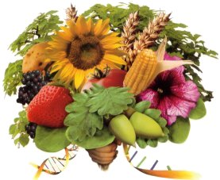
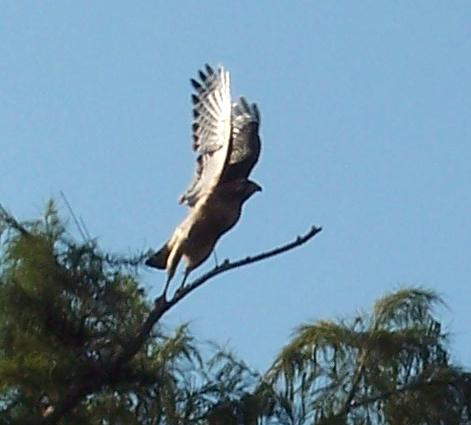
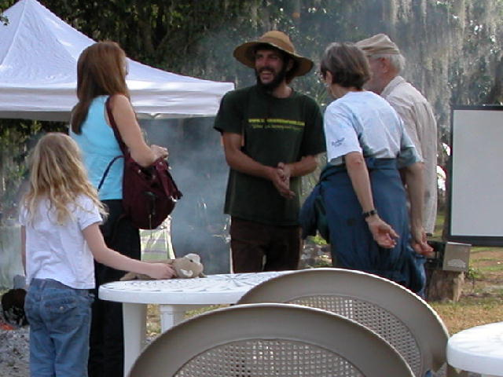
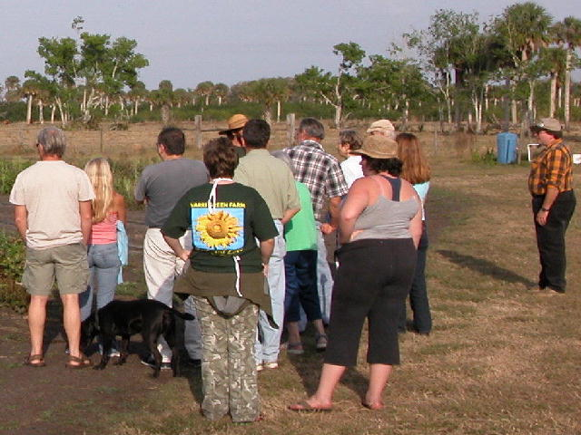
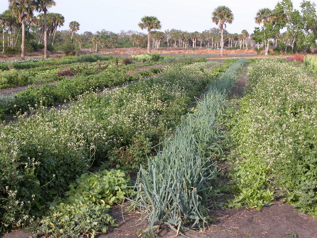
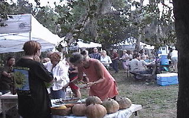
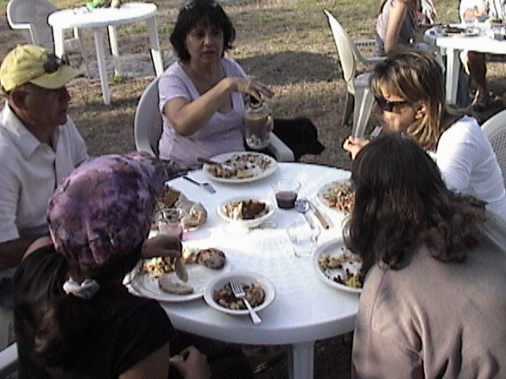

EVENTS & TOURS
We are rebuilding at the moment, but to volunteer, arrange a tour or ask about upcoming events, get in touch.
Over the years the farm has hosted tours of the gardens and fruit trees, children's workshops, Slow Food dinners, music and sweat lodges.
We teach sustainable living and homesteading through real, hands-on experience — touching soil, growing food, and learning through doing.
VISIT & TOURS
The farm is rebuilding at the moment. To volunteer, arrange a tour, or ask about upcoming events, call 772-333-8687 or email sal@varrigreenfarm.com.
Varri Green Farm is at 12847 Hwy 441 SE, Okeechobee, FL 34974, on the black muck of the Lake Okeechobee berm, across the street from the lake.
Where is the farm?
12847 Hwy 441 SE, Okeechobee, FL 34974.
How do I arrange a tour?
Call or email. The farm is rebuilding, and a tour is arranged by getting in touch. Past visits have included tours of the gardens and fruit trees.
Do you list hours or a price?
The site does not list daily hours or a current price. Some past farm tours were free. The farm closes for the summer because of the high bug populations and the intense heat, and to let the land regenerate. Ask when you get in touch.
Can I volunteer?
Yes. Volunteers are always welcome. Come lend a hand.
When is produce available?
Produce is only available in season. Green-market season has started in October. Sal and volunteers worked the Fort Pierce Farmers Market at the Marina on Saturdays and the Palm Beach Gardens GreenMarket on Sundays for over fifteen years, and may return to market again.
Are children's workshops running?
The workshops taught kids and parents what is in their food. They are not running now. With some help, the farm will start them again.







PAST EVENTS
A look back at some of the tours, farm feasts and workshops held at Varri Green Farm.
- March 1, 2006Farm field day: over 20 visitors came to learn what it's like to grow vegetables using natural fertilizers and the least toxic pest controls, written up in the Okeechobee County Extension's organic gardening column.
- November 14, 2006Farm tour for the Vero Master Gardeners.
- January 13, 2007Free farm tour: picnics on the grounds, live acoustic music, Slow Food cooking presentations using fresh vegetables from the garden, and farmers and extension agents answering gardening questions.
- March 3, 2007An Evening at the Farm: Slow Food dinner and garden tour.
- April 21, 2007An Evening at the Farm (Farm Feast II): an Earth Day eve garden tour and farm feast with a free tree raffle, live music and the film ‘An Inconvenient Truth’.
- January 12, 2008An Evening at the Farm: garden tour with Farmer Sal, a Slow Food farm feast, and the film ‘The Future of Food’ with a discussion afterward.
- January 19, 2008Annual free farm tour: a day of wandering the grounds, tasting fresh vegetables, live acoustic music, tours of the garden and orchard, and talks on the Slow Food movement.
- February 23, 2008An Evening at the Farm: garden tour and farm feast, with the film ‘Life Running Out of Control’.
- April 20, 2008An Evening at the Farm: garden tour and Slow Food feast with an Earth Day celebration, a vegetable and tree raffle, a full moon courtesy of Mother Nature, and the film ‘Billion Dollar Crop’.
- May 18, 2008An Evening at the Farm: garden tour and Slow Food feast with a vegetable raffle and the film ‘Sowing for Seed or Sowing for Greed?’.
- January 10, 2009Annual free farm tour: picnics, live acoustic music, tours of the garden and orchard, and talks on gathering at the table for meals made with fresh, local and organic ingredients.
- January 31, March 28 & April 25, 2009Three more An Evening at the Farm dinners.
- March 27, 2010An Evening at the Farm: garden tour with Farmer Sal and a Slow Food farm feast with vegan and raw-food dishes, and the film ‘The Future of Food’. Profits went to a Slow Food fund for children's and community gardens.
- October 30, 2010Children's Farm Workshop: farm talk, where veggies come from, food labeling, planting your own, a food demo, lunch and a farm tour.
- February 16, 2013A stop on Slow Food Gold & Treasure Coast's 2nd Annual U-Drive Farm Tour of small, sustainable farms.